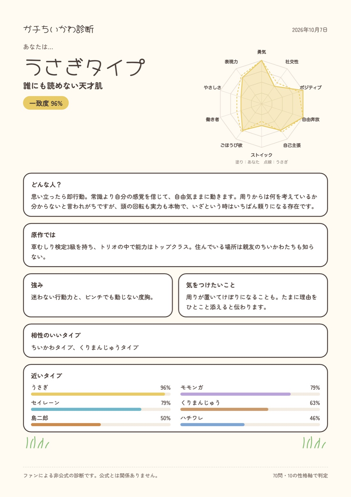

ちいかわのキャラ性格診断（ファンによる非公式）
ガチちいかわ診断
70問に答えると、10の性格軸から、14キャラの中でいちばん近いタイプを割り出します。
- 全70問
- 約10分
- 14タイプ
- ログインなしで遊べる
人が診断をはじめました
診断をはじめるログインなし・約10分。そのまま始まります。

しくみ
好き嫌いではなく、性格の「形」を比べます。
直感で答える
「あてはまる」から「ちがう」までの5段階で、70問に答えます。途中でやめても、同じブラウザなら続きから再開できます。
10の性格軸に分ける
答えを10の軸ごとに集計して、あなたの性格のバランスを出します。
- 勇気
- 社交性
- ポジティブ
- 自由奔放
- 自己主張
- ストイック
- ごほうび欲
- 働き者
- やさしさ
- 表現力
14キャラと比べる
どの軸が高くてどの軸が低いか、という性格の形がいちばん似ているキャラを、一致度つきで出します。
結果でわかること
診断のあと、こんな内容が出ます。
- 近いタイプと一致度いちばん近いキャラと、どれくらい近いか
- どんな人？そのタイプの性格の説明
- 原作では原作でのそのキャラの姿
- 強みと気をつけたいことそのタイプのいいところと、気をつけたいところ
- 性格バランス10の軸のレーダーチャート（あなたとキャラを重ねて表示）
- 相性のいいタイプそのタイプと合うキャラ
- 近いタイプのランキング上位5つと、全14タイプとの一致度
- 結果の保存文をコピー・画像で保存
14のタイプ
あなたはどれに近い？
- ちいかわ泣き虫だけど、いちばん踏ん張る人
- ハチワレ言葉で世界を明るくする人
- うさぎ誰にも読めない天才肌
- モモンガ自分の魅力に正直すぎる人
- 古本屋誰のわがままも受け止める包容力の人
- くりまんじゅうごほうびを知り尽くした頼れる先輩
- ラッコ黙々と頂点に立つ、甘党の実力者
- シーサー修行中の一生懸命さん
- ラーメンの鎧さん背中で語る職人
- ポシェットの鎧さん気づかいを形にするものづくりの人
- 労働の鎧さんぶっきらぼうな現場の仕切り役
- パジャマパーティーズみんなを笑顔にするステージの主役
- 島二郎こわもてで情に厚い、頼れる大人
- セイレーン仲間のためにまっすぐ突き進む人
よくある質問
ログインは必要？
いりません。診断も、キャラの採点も、ログインなしでできます。
結果は保存できる？
結果画面の「画像で保存」で、結果を1枚の画像にできます（スマホは長押し、パソコンは右クリックで保存）。「結果をコピー」で文を写すこともできます。
途中でやめたら？
同じブラウザで開き直すと「続きから再開する」が出ます。
キャラの採点って？
結果のあとで、あなたが思う各キャラの性格を0〜10で採点できます。名前は集めず、採点の数字だけがみんなの集計に入り、結果の「みんなの採点」の判定に使われます。
公式の診断？
ちがいます。ファンが作った非公式の診断で、原作・公式とは関係ありません。キャラの性格の値は作者の解釈です。
さっそく診断してみる
診断をはじめる約10分・70問